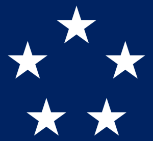

Mareşal Rütbesinin ve 5 Yıldızlı General Unvanının Tarihsel Gelişimi
Askeri rütbeler, savaş tarihinin en önemli unsurlarından biridir. Dünya tarihinde çeşitli ülkelerde farklı rütbe sistemleri geliştirilmiştir. Bunlardan biri de “Mareşal” ve modern dönemde karşılaştığımız “5 yıldızlı general” rütbesidir. Özellikle II. Dünya Savaşı sırasında oluşturulan 5 yıldızlı rütbe, askeri liderlik tarihindeki en yüksek onurlardan biridir. Ancak, daha eski bir kökene sahip olan mareşal rütbesi de bu gelişmenin temelinde yer alır. 
{kind=link}
Mareşal Rütbesinin Ortaya Çıkışı ve Gelişimi
“Mareşal” unvanı, tarihsel olarak Avrupa’da kullanılmış ve özellikle savaş stratejilerinde büyük başarılar elde eden komutanlara verilmiştir. Orta Çağ’da Fransa’da ortaya çıkan bu rütbenin kökeni, eski Fransızca’daki “mareschalc” kelimesine dayanır. Bu kelime, at bakıcısı veya süvari komutanı anlamına gelen bir terimdir. O dönemde atlı birlikler savaşlarda büyük öneme sahipti ve mareşal rütbesi ilk olarak bu birliklerin komutanlarına verilmiştir. Zamanla bu unvan, ordunun genel komutanı anlamına gelmiş ve Avrupa’nın diğer bölgelerine yayılmıştır.
Fransa’da XIII. Louis döneminde Mareşal de France unvanı, devletin en yüksek askeri liderlerine verilmiştir. Bu unvan, özellikle Napolyon Bonapart’ın Avrupa’yı kasıp kavurduğu Napolyon Savaşları döneminde zirveye ulaşmıştır. Napolyon, Fransız İmparatorluğu’nun sınırlarını genişletirken birçok mareşal atamış ve bu unvan, Avrupa’da bir savaş kahramanı statüsü olarak kabul edilmiştir.
Osmanlı İmparatorluğu’nda da mareşal rütbesi, benzer şekilde askeri başarılara imza atan komutanlara verilmiştir. Ancak Osmanlı’da bu rütbe “müşir” olarak bilinir ve büyük bir askeri zafer kazanan ya da orduyu mükemmel bir şekilde komuta eden kişilere layık görülürdü. Bu unvan, askeri hiyerarşide en yüksek rütbelerden biri olarak kabul edilmiştir.
5 Yıldızlı General Rütbesi
Modern dönemde, mareşal rütbesine denk gelen unvanlardan biri “5 yıldızlı general”dir. Özellikle II. Dünya Savaşı sırasında Amerika Birleşik Devletleri’nde oluşturulan bu rütbe, resmi olarak “General of the Army” (Kara Kuvvetleri Generali) olarak bilinir. Bu rütbe, savaş sırasında büyük askeri başarılar kazanan ve tüm orduları yöneten komutanlara verilmiştir. ABD ordusunun en yüksek rütbesi olan 5 yıldızlı general unvanı, dünya savaşlarının zor koşulları altında komutanlık eden liderlere verilmiş prestijli bir onurdur.
5 yıldızlı rütbeye sahip olan generaller, ABD tarihinde büyük bir saygı ve itibar kazanmıştır. Sınırlı sayıda askere verilmiş olan bu rütbe, ABD Kara Kuvvetleri ve Donanması’nda en yüksek askeri unvanlardan biri olarak tarihe geçmiştir.
5 Yıldızlı General Unvanını Alan İsimler
II. Dünya Savaşı sırasında ve sonrasında Amerika Birleşik Devletleri’nde bu rütbeyi alan birkaç önemli general olmuştur. Bu generallerin isimleri askeri tarihe kazınmıştır:
- George Marshall: II. Dünya Savaşı sırasında ABD Genelkurmay Başkanı olarak görev yapmış ve Marshall Planı ile Avrupa’nın savaş sonrası toparlanmasında kilit bir rol oynamıştır.
- Douglas MacArthur: Pasifik Cephesi’nde Japonya’ya karşı yürütülen savaşta büyük başarılar elde etmiş ve Japonya’nın teslim olmasında önemli bir rol oynamıştır.
- Dwight D. Eisenhower: Avrupa’daki Müttefik Kuvvetler Yüksek Komutanı olarak, Normandiya Çıkarması’nın planlayıcılarından biri olup savaşın kazanılmasında büyük katkı sağlamıştır.
- Henry H. Arnold: Hem Kara Kuvvetleri hem de Hava Kuvvetleri için 5 yıldızlı rütbeye sahip olan tek isimdir. ABD Hava Kuvvetleri’nin kurucularından biridir.
- Omar Bradley: II. Dünya Savaşı sonrasında bu rütbeyi alan son generaldir ve ABD ordusunda büyük bir lider olarak tanınır.
ABD tarihinde “Fleet Admiral” (Filo Amirali) rütbesine sahip olan komutanlar II. Dünya Savaşı sırasında bu unvanı almışlardır. Bu rütbe, ABD Donanması’ndaki en yüksek rütbedir ve yalnızca dört kişi bu unvanı almıştır. İşte ABD tarihindeki “Fleet Admiral” olan komutanlar:
- William D. Leahy (1875-1959)
- 15 Aralık 1944’te “Fleet Admiral” unvanını almıştır. Leahy, ABD’nin II. Dünya Savaşı sırasında donanmadaki en kıdemli askeri lideriydi ve savaş süresince Franklin D. Roosevelt’in baş danışmanı olarak görev yapmıştır.
- Ernest King (1878-1956)
- 17 Aralık 1944’te “Fleet Admiral” rütbesine terfi etmiştir. King, II. Dünya Savaşı sırasında ABD Donanması’nın operasyonel kontrolünü elinde tutmuş ve hem Atlantik hem de Pasifik cephelerinde donanmanın savaş operasyonlarını yönetmiştir.
- Chester W. Nimitz (1885-1966)
- 19 Aralık 1944’te “Fleet Admiral” rütbesini almıştır. Nimitz, Pasifik Cephesi’ndeki ABD Donanması’nın en üst düzey komutanıydı ve Japonya’ya karşı yürütülen deniz operasyonlarının lideriydi. Pasifik Savaşı’nın kazanılmasında kilit rol oynamıştır.
- William Halsey Jr. (1882-1959)
- 11 Aralık 1945’te “Fleet Admiral” rütbesine terfi etmiştir. Halsey, Pasifik Cephesi’nde büyük deniz operasyonlarına komuta etmiş ve savaşın sonlarına doğru Japonya’ya karşı yürütülen büyük saldırılarda aktif rol oynamıştır.
Bu dört amiral, ABD Donanması’ndaki en yüksek rütbe olan “Fleet Admiral” unvanını almışlardır ve Amerikan askeri tarihinin en önemli deniz komutanları arasında yer alırlar.
6 Yıldızlı General: Varsayımsal Bir Rütbe
Askeri rütbeler arasında resmi olarak 6 yıldızlı bir general rütbesi bulunmamaktadır. Ancak ABD’de George Washington’a ölümünden sonra “General of the Armies of the United States” unvanı verilmiştir. 1976 yılında, Amerika Birleşik Devletleri’nin 200. kuruluş yıl dönümünde ABD Kongresi, George Washington’ı “tüm zamanların en üst rütbeli askeri” olarak onurlandırmıştır. Bu unvan, Washington’ı 5 yıldızlı generallerin üzerinde bir rütbeye yerleştirmiştir, ancak bu sadece sembolik bir onurlandırmadır ve resmi olarak 6 yıldızlı bir rütbe yaratılmamıştır.
Bu bağlamda, George Washington’un unvanı bir nevi “6 yıldızlı general” gibi görünse de, bu resmi bir statü kazanmamıştır. O nedenle dünya tarihinde 6 yıldızlı bir general resmi olarak mevcut değildir.
Mareşal rütbesi ve 5 yıldızlı general unvanı, dünya askeri tarihinde büyük önem taşıyan rütbelerdir. Mareşal unvanı Orta Çağ’dan itibaren Avrupa’da savaşta büyük başarılar kazanan komutanlara verilen bir rütbe olarak ortaya çıkmış, modern dönemde ise 5 yıldızlı general rütbesi ile devam etmiştir. Bu rütbeler, orduların en üst seviyesindeki komutanlara layık görülmüş ve askeri hiyerarşideki en yüksek onurlar arasında yer almıştır. Özellikle II. Dünya Savaşı sırasında Amerikan ordusunda kullanılan 5 yıldızlı general unvanı, askeri liderlik tarihinde önemli bir yere sahiptir. Ancak resmi bir 6 yıldızlı rütbe yaratılmamış, sadece George Washington’a sembolik bir unvan verilmiştir.